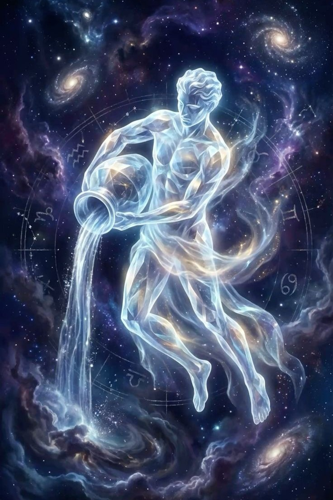

Yıldızların Senin İçin Ne Söylediğini Keşfet
Doğum günün, evrenin sana verdiği ilk ve en özel hediyedir. Kendi potansiyelini keşfetmeye hazır mısın?
Doğum günün, evrenin sana verdiği ilk ve en özel hediyedir. Kendi potansiyelini keşfetmeye hazır mısın?
Cesaretin, tutkunun ve bitmek bilmeyen enerjinin temsilcileridir. Doğal liderlik vasıflarına sahip ateş burçları, girdikleri ortama anında dinamizm katarlar.

Duyguların, sezgilerin ve derinliğin burçlarıdır. Dışarıdan görünmeyen karmaşık bir iç dünyaları vardır. Empati yetenekleri sayesinde karşılarındakini anında hissederler.
Kararlılığın, pratikliğin ve sarsılmaz bir güvenilirliğin temsilcileridir. Ayakları yere sağlam basan toprak burçları, sabırları ve analitik zekalarıyla en zorlu hedefleri bile adım adım gerçeğe dönüştürerek kalıcı eserler bırakırlar.
Zekanın, iletişimin ve sınırsız merakın temsilcileridir. Sosyal becerileri çok yüksek olan hava burçları, yenilikçi fikirleri ve özgür ruhlarıyla bulundukları her ortama yepyeni ve taze bir bakış açısı getirirler.
Astroloji nedir sorusuna kısaca; Astroloji, gezegen ve yıldızların insanlar üzerindeki etkisini yorumlar. İnsanoğlunun yazılı tarihinin başından beri var olan astroloji, bugün artık bilimsel değeri olmadığına inanılan bir disiplindir.
Astroloji kader değildir, her şey insanın kendi elindedir. Astroloji dönemleri inceler, fırsat alanlarını, şanslı zamanları, doğum haritanızda sizi kısıtlayan, zorlayan alanları, gecikmeleri gösterir. Sonuçta nasıl hareket edeceğiniz, neler yapacağınız hepsi sizin iradeniz içindedir. Gezegenlerin iyi açılar yaptığı şanslı dönemlerde, hiçbir şey yapmadan oturursanız bu fırsatları kaçırabilirsiniz. Aynı şekilde gezegenlerin zorlayıcı etkiler yaptığı dönemlerde gerekli gayret ve azmi gösterirseniz tüm zorlukları aşabilir, farkında bile olmadığınız içinizdeki gücü ortaya çıkarabilirsiniz.
Dünya var olduğundan beri insanın doğaya karşı verdiği "varoluş" savaşında kullandığı en etkili araçlardan bir tanesi de Astroloji'dir. Astroloji ilk insanın, genelde gökyüzünden gelen doğal afetleri kontrol etme çabası sonucunda ortaya çıkmış olan, bugün artık bilimsel değeri olmadığına inanılan bir "bilim"dir.
Astroloji'nin temelinde sembollerle akıl yürütme ve tümevarım bulunur. Diğer pek çok bilim dalıyla bağlantısı olan Astroloji sayesinde, doğum haritasının yorumlanmasıyla insanın kişiliği, hayatı, keşfedilmemiş potansiyelleri, kökleşmiş alışkanlıkları, fiziksel problemleri, yetenekleri ve ilerleyen zamanlardaki dinamizmi çok rahat tespit edilebilir.
Sizler için sitemizde diğer pek çoklarının aksine, mümkün olan en kapsamlı çalışmalar derlenmiştir. Uzun bir deneyim sürecinin ve geniş bir kaynakçanın katkılarıyla hazırlanan bu rehber, kendinizi tanımanızda, güçlü yanlarınızı geliştirmenizde, zayıflıklarınızın üstesinden gelmenizde, daha tatminkâr ilişkiler kurmanızda ve ilerletmenizde size yardımcı olacaktır.
Astroloji, burç uyumları veya merak ettiğiniz her şey için bize yazabilirsiniz.